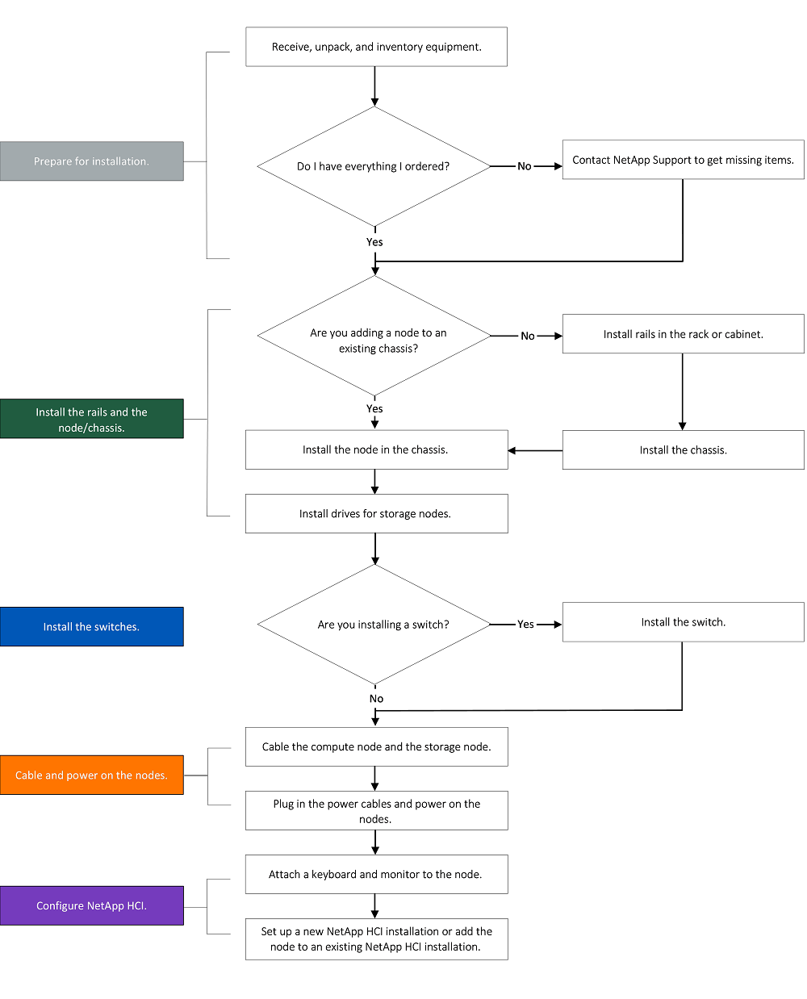
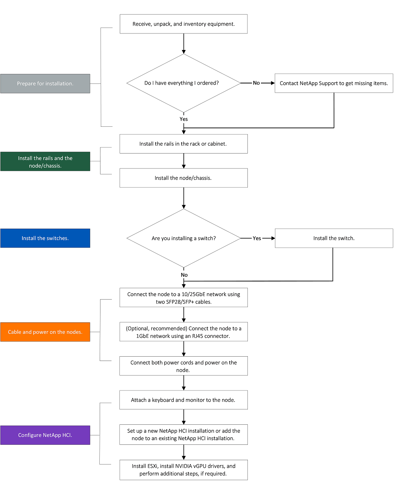
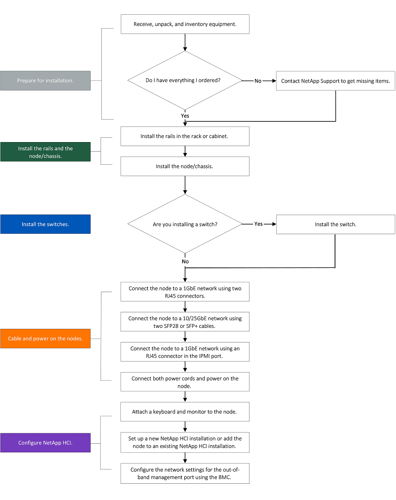
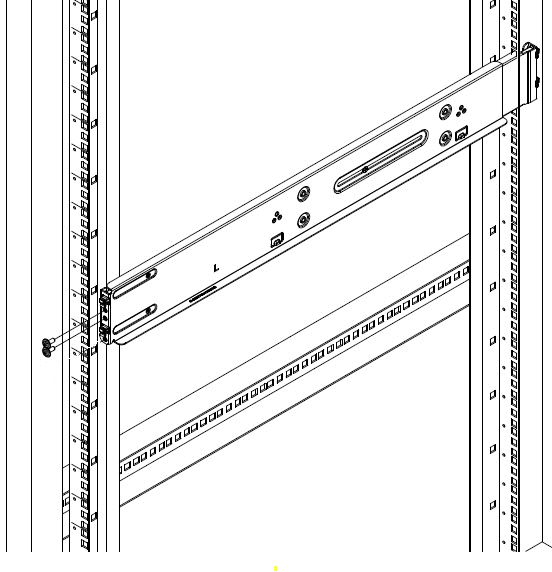
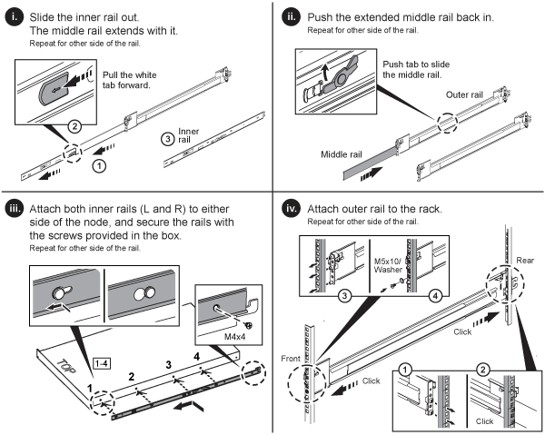
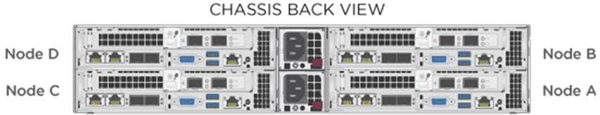
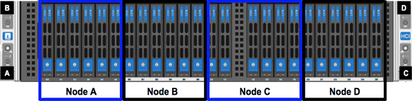
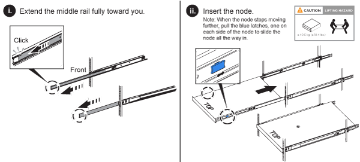
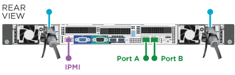

リリースノート
リリースノート
H シリーズハードウェアを設置
 変更を提案
変更を提案
NetApp HCI の使用を開始する前に、ストレージノードとコンピューティングノードを正しくインストールする必要があります。

|
を参照してください "ポスター" 指示を視覚的に表示します。 |
ワークフロー図
このワークフロー図は、インストール手順の概要を示しています。手順は H シリーズモデルによって多少異なります。
H410C および H410S

H610C および H615C

|
H610C および H615C では、 2U / 4 ノードシャーシと違ってノードとシャーシが別々のコンポーネントではないため、「ノード」と「シャーシ」は同じ意味で使用されます。 |

H610S
|
|
H610C および H615C では、 2U / 4 ノードシャーシと違ってノードとシャーシが別々のコンポーネントではないため、「ノード」と「シャーシ」は同じ意味で使用されます。 |

設置を準備
設置準備として、出荷されたハードウェアの中身を確認し、不足しているコンポーネントがある場合はネットアップサポートにお問い合わせください。
設置場所に次のものがあることを確認します。
-
システム用のラックスペース。
| ノードタイプ | ラックスペース |
|---|---|
H410C ノードと H410S ノード |
2 ラックユニット（ 2U ） |
H610C ノード |
2U |
H615C および H610S ノード |
1 ラックユニット（ 1U ） |
-
SFP28 / SFP+ 直接接続ケーブルまたはトランシーバ
-
RJ45 コネクタ付属の CAT5e 以上のケーブル
-
システムを設定するためのキーボード、ビデオ、マウス（ KVM ）スイッチ
-
USB スティック（オプション）
|
|
出荷されるハードウェアは、注文内容によって異なります。新しく購入した 2U / 4 ノードの注文には、シャーシ、ベゼル、スライドレールキット、ストレージノード用ドライブ、ストレージノードとコンピューティングノード用ドライブ、電源ケーブル（シャーシあたり 2 本）が含まれます。H610S ストレージノードを購入した場合、シャーシにはあらかじめドライブが搭載されています。 |

|
ハードウェアの設置時に、梱包材と包装をすべてユニットから取り除いてください。これにより、ノードの過熱やシャットダウンが防止されます。 |
レールを取り付けます
出荷時のハードウェアの注文には、一連のスライドレールが含まれています。レールの取り付けを完了するには、ドライバが必要です。インストールの手順は、ノードのモデルごとに多少異なります。
|
|
装置が転倒しないように、ラックの下から順にハードウェアを設置してください。ラックに安定化デバイスが含まれている場合は、ハードウェアを取り付ける前に取り付けてください。 |
H410C および H410S
H410C ノードと H410S ノードは、 2 組のアダプタが搭載された 2U / 4 ノード H シリーズシャーシに設置されています。丸穴のラックにシャーシを設置する場合は、丸穴のラックに適したアダプタを使用してください。H410C ノードと H410S ノードのレールは、 29 インチ ~ 33.5 インチの奥行きのラックを収容します。レールが完全に収縮すると、長さは 28 インチになり、レールの前部と後部は 1 本のスクリュだけで固定されます。
|
|
完全に契約されたレールにシャーシを設置する場合は、レールの前面と背面のセクションが分かれていることがあります。 |
-
レールの前面をラック前面ポストの穴に合わせます。
-
レール前面のフックをラック前面ポストの穴に押し込み、バネ付きのペグがラックの穴にカチッと収まるまで押し下げます。
-
レールをラックにネジで取り付けます。ラックの前面に取り付けられている左側のレールの図を次に示します。

-
レールの後部をラックの背面ポストまで伸ばします。
-
レール背面のフックを背面ポストの適切な穴に合わせ、レールの前面と背面が同じ高さになるようにします。
-
レールの背面をラックに取り付け、レールをネジで固定します。
-
ラックの反対側で上記の手順をすべて実行します。
H610C
次の図は、 H61OC コンピューティングノード用のレールを設置する手順を示しています。

H610S と H615C
H610S ストレージノードまたは H615C コンピューティングノードのレールを設置する図を次に示します。

|
|
H610S と H615C には左右のレールがあります。H610S / H615C の取り付けネジを使用してシャーシをレールに固定できるよう、ネジ穴を下部に向けます。 |
ノード / シャーシを設置
H410C コンピューティングノードと H410S ストレージノードは、 2U / 4 ノードシャーシに設置します。H610C 、 H615C 、および H610S の場合、シャーシ / ノードをラックのレールに直接設置します。
|
|
NetApp HCI 1.8 以降では、 2 つまたは 3 つのストレージノードでストレージクラスタをセットアップできます。 |
|
|
梱包材と包装材をすべてユニットから取り除きます。これにより、ノードの過熱やシャットダウンが防止されます。 |
H410C ノードと H410S ノード
-
H410C ノードと H410S ノードをシャーシに設置します。4 つのノードを設置したシャーシの背面図の例を次に示します。

-
H410S ストレージノードのドライブを設置します。

H610C ノード / シャーシ
H610C では、 2U / 4 ノードシャーシとは異なり、ノードとシャーシが別々のコンポーネントではないため、「ノード」と「シャーシ」は同じ意味で使用されます。
ノード / シャーシをラックに設置する場合の図を次に示します。

H610S および H615C ノード / シャーシ
H615C および H610S では、 2U / 4 ノードシャーシとは異なり、ノードとシャーシが別々のコンポーネントではないため、「ノード」と「シャーシ」は同じ意味で使用されます。
ノード / シャーシをラックに設置する場合の図を次に示します。

スイッチを設置します
NetApp HCI 環境で Mellanox SN2010 、 SN2100 、および SN2700 のスイッチを使用する場合は、次の手順に従ってスイッチを設置してケーブル接続します。
ノードをケーブル接続
既存の NetApp HCI 環境にノードを追加する場合は、追加するノードのケーブル配線とネットワーク構成が既存の環境と同じになるようにしてください。
|
|
シャーシ背面の通気口がケーブルやラベルで塞がれていないことを確認します。これにより、過熱によってコンポーネントで早期に障害が発生する可能性があります。 |
H410C コンピューティングノードと H410S ストレージノード
H410C ノードのケーブル接続には、 2 本のケーブルを使用する方法と 6 本のケーブルを使用する方法の 2 つがあります。
ケーブルを 2 本使用する構成は次のとおりです。

 ポート D および E の場合は、 SFP28 / SFP+ ケーブルまたはトランシーバを 2 本接続して、管理、仮想マシン、ストレージの共有接続に使用します。
ポート D および E の場合は、 SFP28 / SFP+ ケーブルまたはトランシーバを 2 本接続して、管理、仮想マシン、ストレージの共有接続に使用します。
 （オプションですが推奨） CAT5e ケーブルを IPMI ポートに接続します（アウトオブバンド管理接続用）。
（オプションですが推奨） CAT5e ケーブルを IPMI ポートに接続します（アウトオブバンド管理接続用）。
ケーブルを 6 本使用する構成は次のとおりです。

 ポート A とポート B については、管理接続用に 2 本の CAT5e 以上のケーブルをポート A と B に接続します。
ポート A とポート B については、管理接続用に 2 本の CAT5e 以上のケーブルをポート A と B に接続します。
 ポート C および F について、 SFP28 / SFP+ ケーブルまたはトランシーバを 2 本接続します。
ポート C および F について、 SFP28 / SFP+ ケーブルまたはトランシーバを 2 本接続します。
ポート D および E の場合は、 SFP28 / SFP+ ケーブルまたはトランシーバを 2 本接続します。
（オプションですが推奨） CAT5e ケーブルを IPMI ポートに接続します（アウトオブバンド管理接続用）。
H410S ノードのケーブル配線は次のとおりです。

ポート A とポート B については、管理接続用に 2 本の CAT5e 以上のケーブルをポート A と B に接続します。
ポート C および D について、 SFP28 / SFP+ ケーブルまたはトランシーバを 2 本接続します。
（オプションですが推奨） CAT5e ケーブルを IPMI ポートに接続します（アウトオブバンド管理接続用）。
ノードをケーブル接続したら、シャーシごとに 2 つある電源装置に電源コードを接続し、 240V の PDU または電源コンセントに差し込みます。
H610C コンピューティングノード
H610C ノードのケーブル配線は次のとおりです。
|
|
H610C ノードはケーブルを 2 本使用する構成でのみ導入されます。すべての VLAN がポート C とポート D に存在することを確認します |

 ポート C および D の場合は、 SFP28 / SFP+ ケーブルを 2 本使用してノードを 10 / 25GbE ネットワークに接続します。
ポート C および D の場合は、 SFP28 / SFP+ ケーブルを 2 本使用してノードを 10 / 25GbE ネットワークに接続します。
（オプション、推奨） IPMI ポートで RJ45 コネクタを使用してノードを 1GbE ネットワークに接続
 両方の電源ケーブルをノードに接続し、 200~240V の電源コンセントに電源ケーブルを接続します。
両方の電源ケーブルをノードに接続し、 200~240V の電源コンセントに電源ケーブルを接続します。
H615C コンピューティングノード
H615C ノードのケーブル配線は次のとおりです。
|
|
H615C ノードの導入は、ケーブルを 2 本使用する構成だけです。すべての VLAN がポート A とポート B に存在することを確認します |

ポート A とポート B については、 SFP28 / SFP+ ケーブルを 2 本使用してノードを 10 / 25GbE ネットワークに接続します。
（オプション、推奨） IPMI ポートで RJ45 コネクタを使用してノードを 1GbE ネットワークに接続
両方の電源ケーブルをノードに接続し、電源ケーブルを 110~140V の電源コンセントに接続します。
H610S ストレージノード
H610S ノードのケーブル配線は次のとおりです。

IPMI ポートで 2 つの RJ45 コネクタを使用してノードを 1GbE ネットワークに接続します。
SFP28 または SFP+ ケーブルを 2 本使用してノードを 10 / 25GbE ネットワークに接続
IPMI ポートで RJ45 コネクタを使用してノードを 1GbE ネットワークに接続
両方の電源ケーブルをノードに接続します。
ノードの電源をオンにします
ノードがブートするまでに約 6 分かかります。
次の図は、 NetApp HCI 2U シャーシの電源ボタンを示しています。

H610C ノードの電源ボタンを次の図に示します。

H615C および H610S ノードの電源ボタンを次の図に示します。

NetApp HCI を設定します
次のいずれかのオプションを選択します。
新しい NetApp HCI のインストール
-
1 つの NetApp HCI ストレージノードの管理ネットワーク（ Bond1G ）で IPv4 アドレスを設定します。
管理ネットワークで DHCP を使用している場合は、 DHCP で取得されたストレージシステムの IPv4 アドレスに接続できます。 -
キーボード、ビデオ、マウス（ KVM ）を 1 つのストレージノードの背面に接続します。
-
ユーザインターフェイスで Bond1G の IP アドレス、サブネットマスク、ゲートウェイアドレスを設定します。Bond1G ネットワークの VLAN ID を設定することもできます。
-
-
サポート対象の Web ブラウザ（ Mozilla Firefox 、 Google Chrome 、 Microsoft Edge ）を使用し、手順 1 で設定した IPv4 アドレスに接続して NetApp Deployment Engine に移動します。
-
NetApp Deployment Engine のユーザインターフェイス（ UI ）を使用して NetApp HCI を設定します。
他のすべての NetApp HCI ノードは自動的に検出されます。
既存の NetApp HCI インストールを展開します
-
Webブラウザで管理ノードのIPアドレスを開きます。
-
NetApp HCI ストレージクラスタ管理者のクレデンシャルを指定して NetApp Hybrid Cloud Control にログインします。
-
ウィザードの手順に従って、ストレージノードとコンピューティングノードを NetApp HCI 環境に追加します。
H410C コンピューティングノードを追加するには、既存の環境で NetApp HCI 1.4 以降を実行している必要があります。H615C コンピューティングノードを追加するには、既存の環境で NetApp HCI 1.7 以降を実行している必要があります。
同じネットワーク上に新しく設置した NetApp HCI ノードは自動的に検出されます。
設定後のタスクを実行
使用しているノードのタイプによっては、ハードウェアを設置して NetApp HCI を設定したあとで、追加の手順を実行する必要があります。
H610C ノード
設置した各 H610C ノード用の GPU ドライバを ESXi にインストールし、その機能を検証します。
H615C および H610S ノード
-
Web ブラウザを使用して、デフォルトの BMC IP アドレス「 192.168.0.120 」に移動します
-
ユーザー名 root とパスワード calvin を使用してログインします
-
ノード管理画面で、 * Settings > Network Settings * と移動し、アウトオブバンド管理ポートのネットワークパラメータを設定します。
H615C ノードに GPU が搭載されている場合は、設置した H615C ノードごとに ESXi に GPU ドライバをインストールし、その機能を検証します。